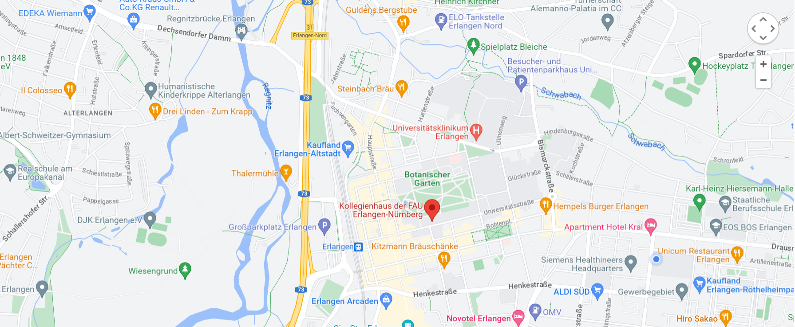

Kollegienhaus der FAU Erlangen-Nürnberg (Universitätsstraße 15, 91054 Erlangen)
Sinologisches Institut der Friedrich-Alexander-Universität Erlangen-Nürnberg
Gebuchte Übernachtungskontingente in Erlangen
Anreise: 24.11.23
Abreise: 26.11.23
- Holiday Inn Express, Güterbahnhofstr. 9, 91052 Erlangen, Tel.: 09131 68198-0, Email: frontdesk@hi-express-erlangen.de
- € 99.-- pro Einzelzimmer/Nacht inkl. Frühstück
- buchbar bis 05.10.23
- Novotel Erlangen, Hoffmannstr. 34, 91052 Erlangen, Tel.: 09131 9747-0, Email: H5376-RE1@accor.com
- € 97.-- pro Einzelzimmer/Nacht inkl. Frühstück
- buchbar bis 12.10.23
Weitere Hotelempfehlungen zum Übernachten (zum Selbstbuchen, kein Kontingent)
- A.B. Hotel GmbH, Harfenstr. 1c, 91054 Erlangen, Tel.: 09131 9244700, Email: info@abhotel.de (Einzelzimmer ab 45.--/Nacht)
- The niu Cure, Paul-Gossen-Str. 75, 91052 Erlangen, Tel.: 09131 6238690, Email: cure@the.niu.de (Einzelzimmer ab 60.--/Nacht)
- Hotel Grauer Wolf, Hauptstr. 80-82, 91054 Erlangen, Tel.: 09131 81060, Email:hotel@grauer-wolf.de (Einzelzimmer ab 70.--/Nacht)
- Creativhotel Luise, Sophienstr. 10, 91052 Erlangen, Tel.: 09131 1220, Email: info@hotel-luise.de (Einzelzimmer ab 90.--/Nacht)
Restaurantempfehlungen
- Cucina di Napoli, Engelstr. 15, 91054 Erlangen
- Ristorante Carpaccio, Obere Karlstr. 22, 91054 Erlangen
- Poseidon, Nürnberger Str. 108, 91052 Erlangen
- Gasthof Spezerei, Wöhrstr. 1, 91054 Erlangen
- My Hao, Karl-Zucker-Str. 18, 91052 Erlangen
- Restaurant Mekong, Schuhstr. 4, 91052 Erlangen
- Galileo Bar & Restaurant, Calvinsstr. 3, 91054 Erlangen